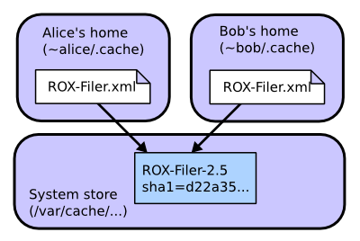
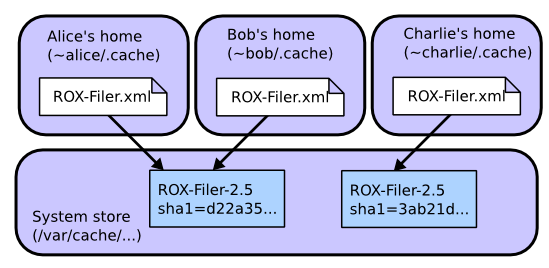

Sharing downloads between users
On systems with multiple users, it would be very inefficient if each user had to download their own copy of each program. Most packaging systems require users to have root access in order to share software (either the root password, or admin access through sudo). However, this is a security risk. Zero Install allows software to be shared automatically and safely between mutually-untrusting users.
- How it works
- Setting up sharing for version 0.30 or later
- Setting up sharing for older versions (before 0.30)
- Questions
How it works
A digest is a short value calculated from a (usually much bigger) file. There are various different algorithms that can be used. For example, this command calculates the SHA1 digest of the ls binary:
$ sha1sum /bin/ls 90b703d3d29ef20f3ef711eb38625d618c70c4f6 /bin/ls
A cryptographic digest (like SHA1) is one where it is believed to be infeasibly difficult to create a different program with the same digest. So, if someone gives you a binary with digest above, you can be sure that it's identical to the version of ls that I'm using.
Cryptographic digests are the basis of secure sharing in Zero Install. Here's we'll see an example of how two users (Alice and Bob) can share the ROX-Filer program, even if they don't trust each other.

First, Alice runs ROX-Filer:
- Alice visits rox.sourceforge.net and downloads the small ROX-Filer.xml feed file.
- She decides to run ROX-Filer version 2.5 from this file.
- The Zero Install software gets the digest for this version (sha1=d22a35871bad157e32aa169e3f4feaa8d902fdf2) from the file. It also downloads the package and unpacks it.
- The software passes the unpacked archive to the privileged helper, which checks the digest and copies the directory to /var/cache/0install.net/implementations/sha1=d22a35871bad157e32aa169e3f4feaa8d902fdf2.
- ROX-Filer runs.
Later, Bob decides to run it too. The system doesn't need to download a second copy:
- Bob visits rox.sourceforge.net and downloads the small ROX-Filer.xml feed file.
- He decides to run ROX-Filer version 2.5 from this file.
- The Zero Install software gets the digest for this version (sha1=d22a35871bad157e32aa169e3f4feaa8d902fdf2) from the file.
- Zero Install sees that the directory /var/cache/0install.net/implementations/sha1=d22a35871bad157e32aa169e3f4feaa8d902fdf2 already exists, so it doesn't download the software again.
- ROX-Filer runs.
But what if we have a malicious user, Charlie? A new machine arrives, and Charlie decides to install a malicious version of ROX-Filer before anyone else installs a good copy:
- Charlie visits rox.sourceforge.net and downloads the small ROX-Filer.xml feed file.
- He decides to use ROX-Filer version 2.5 from this file.
- The Zero Install software gets the digest for this version (sha1=d22a35871bad157e32aa169e3f4feaa8d902fdf2) from the file. It also downloads the package and unpacks it.
- Charlie modifies the download to do something nasty (or, the download has been tampered with, or Charlie's account has been infected with a virus which modifies it, etc).
- If Charlie tries to install the result to /var/cache/0install.net/implementations/sha1=d22a35871bad157e32aa169e3f4feaa8d902fdf2, the privileged helper rejects it, because the digest of the directory's contents no longer matches that name.
- Charlie is forced to install his malicious version as /var/cache/0install.net/implementations/sha1=3ab21d8f410e3a5a863d3a32a152edb31ba42f75 instead.
When Alice runs ROX-Filer as before, the software sees that /var/cache/0install.net/implementations/sha1=d22a35871bad157e32aa169e3f4feaa8d902fdf2 doesn't exist and downloads a genuine copy as before. When Bob runs ROX-Filer, he will use Alice's version.

You might be worried that Charlie was able to put malicious code in the shared cache. However, it doesn't matter because other users won't try to run it, since it doesn't have the name they're looking for. Of course, it might not even be malicious: a program that deletes files is malicious if it's called cat, but not if it's called rm. As long as users don't go around running random binaries they find in the cache, they're OK.
Setting up sharing for version 0.30 or later
These instructions are for version 0.30. See below if you have an older version (0launch --version will display the current version).
The actual code for doing sharing this way is currently EXPERIMENTAL and not enabled by default. This section shows how the system administrator (someone with root access) can enable it. DO NOT do this in security critical environments yet - we're still working on tightening the security on this! Feedback welcome.
- Install 0launch version 0.30 or later.
- Create a new system user called 'zeroinst' (the Ubuntu package will have done this for you automatically).
# adduser --system zeroinst
- Create the shared directory, owned by this new user (also done automatically by the Ubuntu package):
# mkdir /var/cache/0install.net # chown zeroinst /var/cache/0install.net
- Create /usr/local/bin/0store-secure-add-helper with:
#!/bin/sh exec sudo -S -u zeroinst /usr/bin/0store-secure-add "$@" < /dev/null
- Make your new script executable:
# chmod a+x /usr/local/bin/0store-secure-add-helper
- Use visudo to add these lines to /etc/sudoers:
Defaults>zeroinst env_reset ALL ALL=(zeroinst) NOPASSWD: /usr/bin/0store-secure-add
Note: the NOPASSWD line MUST go at the end of the file, otherwise it is likely to be overridden by later entries.
When 0launch wants to install a package, it will invoke 0store-secure-add-helper. This script uses sudo to run 0store-secure-add as the zeroinst user, with a clean environment. No password is required for this.
Setting up sharing for older versions (before 0.30)
The actual code for doing sharing this way is currently EXPERIMENTAL and not enabled by default. This section shows how the system administrator (someone with root access) can enable it. DO NOT do this in security critical environments yet - we're still working on tightening the security on this! Feedback welcome.
- Install 0launch version 0.26 or later.
- Create a new system user called 'zeroinst' (this command is for Debian; other systems may need other commands):
# adduser --system zeroinst
- Create the shared directory, owned by this new user:
# mkdir /var/cache/0install.net # chown zeroinst /var/cache/0install.net
- Create /usr/local/bin/0store-helper with:
#!/bin/sh cd "$2" || exit 1 chmod -R a+rX . exec sudo -u zeroinst /usr/local/bin/0store-helper-priv "$1"
- Create /usr/local/bin/0store-helper-priv with:
#!/bin/sh exec 0store add "$1" .
- Make your new scripts executable:
# chmod a+x /usr/local/bin/0store-helper # chmod a+x /usr/local/bin/0store-helper-priv
- Use visudo to add these lines to /etc/sudoers:
Cmnd_Alias ZEROINSTALL = /usr/local/bin/0store-helper-priv Defaults>zeroinst env_reset ALL ALL=(zeroinst) NOPASSWD: ZEROINSTALL
Note: the NOPASSWD line MUST go at the end of the file, otherwise it is likely to be overridden by later entries.
When 0launch wants to install a package, it will invoke 0store-helper. This script uses sudo to run 0store-helper-priv as the zeroinst user, with a clean environment. No password is required for this.
Questions
- How do users uninstall?
- Currently, they can't. You (the admin) can delete directories from /var/cache/0install.net/implementations to save space (preferably not while they're being used ;-). Ideally, we should track which users have requested which programs and remove them automatically when no-one wants them anymore.
- What kind of things need 'tightening'?
- Several things spring to mind:
- What happens if the user changes the directory whilst it's being added? We need to audit 0store-secure-add.
- Denial of service attacks, if one user stores lots of stuff (need quotas).
- Why do things still get stored in ~/.cache after setting this up?
- Things you've already installed will remain there. Only new software is added in the system cache. Also, the old sha1 algorithm isn't accepted by the helper, so software using that can't go in the shared cache. If you still have problems, try running 0launch -vvc URI (to see debug output). Finally, make sure your script is executable!